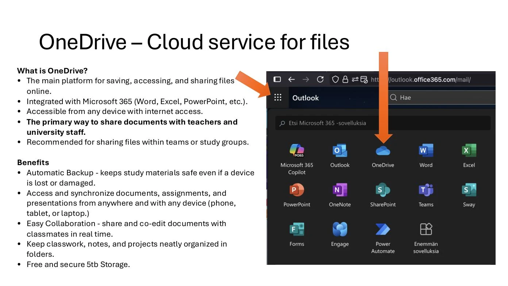
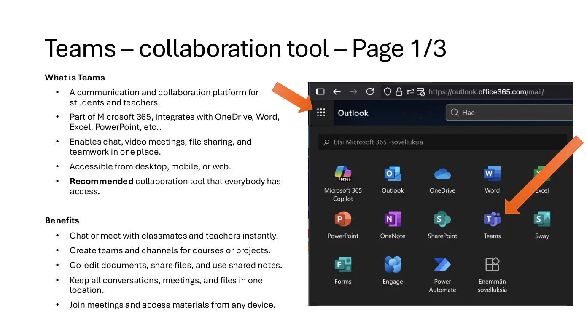

CT30A1000 学习工具与AI · 第 06 / 06 讲
第 6 讲 · 在学习中使用 AI：提示技巧与成绩说明
Using AI in Studies: Prompting Techniques and Course Grades
所属章节：第 3 章 AI 生成内容与使用规范
资料来源 · 8 项 / 已附 0 项
Lecture 6 Using AI in studies.pdf.txt未附原文件8_Course Grades_1_20261115CourseGrades.pdf.txt未附原文件1_Lecture 1 Tools and services for studying.pdf未附原文件2_Lecture 2 Office software and AI.pdf未附原文件3_Lecture 3 Presentation tools.pdf未附原文件4_Lecture 4 Drawing and design software.pdf未附原文件5_Lecture 5 Content produced by various AIs.pdf未附原文件6_Lecture 6 Using AI in studies.pdf未附原文件
未附文件仅列原始名称；版本与核对日期由维护者登记。
本讲定位
前五讲都在讲“用哪个工具、怎么用”。最后一讲回答更根本的问题：怎样用 AI 才真的在学，而不是在替代学习。课件把 AI 比作一面镜子——照出你的输入质量，也照出你是走“偷懒路径”还是“批判路径”。
本讲同时把课程的评分方式讲清（在线考试 + 项目 + 总评），因为这两件事共同决定你该如何分配最后两周的精力。
学完本讲你应当能够：
- 区分 AI 的“偷懒路径”与“批判路径”，并为自己的每次使用定位
- 写出带角色、上下文、样例与追问的提示词，拿到可用于学习的反馈
- 识别 AI 的偏见与幻觉，并知道“永远不要引用 AI 本身”
- 用 chain-of-thought、few-shot、reverse prompting、role-play 四种技巧完成一次面试演练
- 读懂成绩表，算出一门课的总分构成与目标分数
一、AI 不会读心
AI 依据它从海量数据中学到的统计模式运作；除非你明确说明，它不理解你的潜在意图或困惑。因此，AI 的输出质量是你输入质量（提示词）的直接反映。
这条听起来像常识，但它解释了一个常见体验：你觉得“AI 很笨”，往往是因为你只说“帮我看看这段”，没有说你是谁、给谁看、要达到什么标准。
二、AI 是一面镜子：两条路径
课件把使用方式分成两条路，这是本讲的核心对照：
| 维度 | 偷懒路径（Lazy Path） | 批判路径（Critical Path） |
|---|---|---|
| 做法 | 用 AI 生成最终答案、摘要或草稿，且不 review | 用 AI 检验你的理解、挑战你的假设、生成不同视角 |
| 后果 | 被动消费，批判性思维被侵蚀 | 主动学习，批判性思维被保留甚至加强 |
| 典型信号 | 你读 AI 的答案时“觉得懂了”，但合上电脑说不出来 | 你能指出 AI 哪一句错了、为什么错 |
| 判断标准 | 产出是否取代了你的思考 | 产出是否暴露了你的盲点 |
三、提示词的第一课：躲开“有帮助”的陷阱
课件指出一个结构性偏差：AI 被设计成顺从、有帮助，它最大化“正面交互”的可能性；训练数据也让模型倾向于给出正面反馈或安全答案，因为那看起来是用户想听的。结果是你问“我这篇写得好吗”，它大概率说“很好”。
解法是人格化提示（persona prompting）——主动要求残酷、诚实的反馈。课件给了对照：
| 不要这样写 | 这样写 |
|---|---|
| “Check my essay.” | “I want you to act as the chief editor for a top-tier academic journal. Your acceptance rate is less than 5%. Be hyper-critical of the methodology, logical leaps, and citation rigor. I can handle difficult feedback.” |
为什么有效：角色改变了模型对“什么算好答案”的取样范围；明确的“我承受得住”解除了它“不要冒犯用户”的倾向。
四、迭代与挑战：不要接受第一个答案
课件的操作很具体：永远不要接受第一个回答，要求 AI 做三件事——
- “Argue the opposite viewpoint.”（论证相反观点）
- “List three factual points where my summary might be weak.”（列出我的摘要可能薄弱的三个事实点）
- “Re-write this explanation for a high school student and then for a domain expert.”（先写给高中生，再写给领域专家）
第三条的作用是强制 AI 综合并调整复杂度，同时检验你和它是否真的理解——如果你能看出两版差别在哪，说明你掌握了抽象层级。
五、AI 会复制人类的偏见
大语言模型训练所用的巨量文本，反映了人类写作中历史、文化与社会层面的偏见。课件要求你做一个怀疑的读者，每次都问：“这个答案是否在延续某种刻板印象或过度简化？”
实践建议：让 AI 生成“有哪些群体可能被这个方案忽略”，或要求它列出反面案例；对涉及性别、国籍、年龄、专业的概括尤其警惕。
六、AI 可以很自信，但仍然是错的
幻觉（hallucination）的机制：AI 是文本预测机器，不是事实检索系统；它可以生成听起来合理但完全错误的信息。
处理规则只有两条，但必须执行：永远核对来源（引文或原文），确认 AI 输出有效；永远不要引用 AI 本身作为学术来源。
七、上下文工程（context engineering）
原则：把 AI 成功完成任务所需的全部上下文都给它。课件的对照很直观：通用输出 “Write me a sales email.” 一听就像 AI 写的；好的输出要先告诉 AI“你平时是怎么说话的”。做法是上传品牌指南、你的语气说明，或你自己的写作样本。
课件给了一个完整的“上下文工程”示例：提示词写成“Write me a sales email from our brand voice guideline...”，并上传或写出指南；“...that references the discussion I had with this customer...”，上传销售通话记录；“...also reference our product specifications whichever we referenced in the call.”，给 AI 访问产品信息。结果是：个性化、领域特定、听起来像你写的输出。
迁移到学习场景：写课程报告时，把课程的学习成果、评分标准、教师给的范例一起给 AI，让它按“这门课的标准”提意见，而不是按“互联网的平均标准”。
八、思维链（chain-of-thought）：让它把思考说出来
“Thinking out loud”常常带来解题的突破。做法是在提示词里加一句：“Before you respond, please walk me through your thought process step by step.”
为什么对 AI 有效：AI 是逐词预测，它并不预先想好答案；把中间步骤写出来，等于给它更多的“预测上下文”，也让推理中的跳跃暴露出来。结果是你能看到“黑箱”里有什么，从而评估答案中的假设与逻辑。
九、少样本提示（few-shot prompting）
课件说得很直白：AI 的基础回答“听起来像互联网”，而大部分人对 AI 的直觉是错的。做法是先想清楚你要什么样的输出，然后把好样例放进提示词：“here is how the good answer look to me...”，再把坏样例放进去：“here is how the bad answer look to me...”，最后要求：“Please follow the good example and steer clear of this bad example.”
这是最省时间的技巧之一：一个样例胜过十句形容词。
十、反向提示（reverse prompting）
AI 不会主动问你问题，除非你允许它问。做法是告诉它：在开始前，把它做出好答案所需要的信息问清楚——“And before you get started, ask me any information you need to do a good job.”
这条特别适合“你自己也没想清楚”的任务（选题、研究问题、报告结构）：让 AI 先问你五个问题，往往比你自己憋一小时更有用。
十一、给 AI 一个角色
给 AI 一个角色，能帮它调动相关知识并建立联系：“I want you to be a professional [Expertise Field] expert.” 或 “I want you to be a [famous person].” 这会给你一个“别人会怎么解决这个问题”的视角，并把它的知识范围收窄到该专业。
十二、角色扮演：为真实场景排练
课件把 role-play 拆成四个准备项，这套结构可以直接用于面试、客户电话、导师会谈：
- 给 AI 一个人设（招聘者、客户、老板），写清这个人的性格、沟通风格、情绪倾向；
- 写清你们的关系（第一次面试、长期客户、导师与学生）；
- 给内容：这次谈话是关于什么（面试、销售电话）；
- 写场景：谈话在哪里发生、双方各自想要什么、你希望得到什么结果；并提供附加信息（招聘广告、你的 CV、产品资料）。
执行方式是：把上述信息粘贴到语音 AI 聊天里，让它在这个情境中扮演这个人，与你对话；对话结束后，把逐字记录（transcript）粘回文本聊天，要求具体反馈：“Review this transcript and give me specific feedback on what I did well and where I need to improve.”
十三、课程成绩怎么算
课程成绩由两部分组成：在线考试（Online Exam）与项目（Project）。成绩表列出六列：ID number、Online Exam、Online Exam Grade、Project Points、Project Grade、Course total - Max 100、Course Grade。
把表中数值放在一起看，可以得到几条可核对的关系（以下为依据表格数据归纳，非课件文字说明）：
- 在线考试与项目各自的得分上限都是 20 分；
- 总分 = 2.5 ×（在线考试得分 + 项目得分），因此 20 + 20 = 100；
- 例如考试 18.17、项目 20 → 2.5 × 38.17 = 95.43；考试 19.17、项目 19 → 2.5 × 38.17 = 95.43；两组不同的输入得到同一个总分，正好验证了“两项等权、系数 2.5”；
- 课程总评的分档与 90 分对应 5 分一致：表中 91.25 及以上为 5，86.68 与 88.33 为 4。
由此可以做一个简单的目标倒推：想拿 5（≥90），两项合计需 ≥36 分；若项目拿满 20，考试至少 16 分；若考试只有 16.67（表中的一个实际值，对应考试等级 4），项目 20 时总分 91.68，仍然是 5。
成绩表还显示：考试等级 5 对应约 18.17 及以上，4 对应 16.5–17.83，3 对应 15.67（按 90%/80%/70% 的常见分档可解释）；项目得分 18–20 都记为 5.00。这些同样是表中数值的归纳。
十四、把六讲连成一条学习闭环
第 1 讲给你系统，第 2–4 讲给你工具，第 5 讲给你内容生产与合规，第 6 讲给你方法。闭环是：用工具产出 → 用 AI 做批判性检查 → 回到原始来源核对 → 写清 AI 声明 → 提交。任何一步跳过，前一步的价值都会打折。
“有帮助陷阱”是结构性的：AI 被设计成顺从、最大化正面交互，所以你问“我这篇写得好吗”，它大概率说很好。破解方式是人格化提示（persona prompting）——要求它扮演录用率低于 5% 的主编，并补一句 I can handle difficult feedback，解除它“不要冒犯用户”的倾向。判断走哪条路径只看一件事：用完能否脱稿把结论讲给别人听。
成绩表里 18.17+20 与 19.17+19 都得 95.43，验证“两项等权、系数 2.5”：总分 = 2.5 ×（考试 + 项目），每项上限 20；想拿 5（≥90）合计需 ≥36。但这是依表格反推，若课程页说明不同以其为准。“永远不要引用 AI 本身”：流畅表达 + 具体数字 + 看似规范的参考文献都能生成，必须回到原始来源核对。
稳定拿到高质量 AI 输出的骨架是四件事：角色（You are a teaching assistant for a logic course）+ 任务（check my proof for gaps）+ 格式（list each gap as: step, why wrong, fix）+ 约束（do not rewrite the proof, only point at lines）。进阶两招：给示例（few-shot：先给一对「错→改」再让它照做）；要求自查（before answering, list what you are unsure about）。成绩说明（disclosure）按本课模板写一句即可：用了什么工具、做了什么。
原版图页（源 PDF 插图页）





| English | 中文 | 说明 / 例句 |
|---|---|---|
| prompt | 提示词 | The instruction given to an AI; output quality reflects input quality. |
| lazy path | 偷懒路径 | Generating final answers or drafts without review; passive consumption. |
| critical path | 批判路径 | Using AI to test understanding and challenge assumptions; active learning. |
| helpful trap | 有帮助陷阱 | AI tends to be agreeable, giving positive feedback the user wants to hear. |
| persona prompting | 人格化提示 | Assigning a critical role, e.g. a chief editor with a 5% acceptance rate. |
| hallucination | 幻觉 | Plausible-sounding but false information generated by an AI. |
| bias | 偏见 | Patterns in training data that reproduce stereotypes or oversimplification. |
| context engineering | 上下文工程 | Providing all context needed: guidelines, tone, transcripts, specifications. |
| chain-of-thought | 思维链 | Asking the AI to walk through its reasoning step by step. |
| few-shot prompting | 少样本提示 | Including good and bad examples in the prompt. |
| reverse prompting | 反向提示 | Asking the AI to request the information it needs before answering. |
| role-play | 角色扮演 | AI plays a recruiter or client; you practise a real situation. |
| transcript | 逐字记录 | The text of a spoken practice session, used for feedback. |
| online exam | 在线考试 | One of the two graded components; 20 points maximum in the grade table. |
| course total | 课程总分 | Course total - Max 100; in the table 2.5 × (exam + project). |
| course grade | 课程等级 | 0–5 scale; 5 corresponds to about 90 points and above in the table. |
提示词：“I want you to act as the chief editor for a top-tier academic journal. Your acceptance rate is less than 5%. Be hyper-critical of the methodology, logical leaps, and citation rigor. I can handle difficult feedback. Here is my draft: [贴上 800 字].”
第一轮回复后追问：“List three factual points where my argument might be weak, and for each tell me what evidence would fix it.”
第二轮再追问：“Argue the opposite viewpoint in 150 words, then tell me which of your objections is strongest.”
怎么用结果：不接受它的措辞，只接受它指出的位置；每条批评回到原文核对，能改的改，不能改的写进 limitations。
上下文：上传三段你以前写过的邮件、一份招聘广告、你的 CV；告诉 AI“我的语气是直接、简短、不用夸张形容词”。
少样本：给一个好样例（你满意的旧邮件）与一个坏样例（模板腔的邮件），要求“follow the good example and steer clear of this bad example”。
提示词：“Write a 120-word email to the recruiter for this summer trainee position, using my tone. Mention two concrete projects from my CV and one reason I fit this team. No clichés.”
检查：是否出现你没做过的经历（幻觉）；语气是否像你；长度是否适合邮件；最后自己改写一遍再发。
第 1 步（反向提示）：“I have an interview for a software trainee position in 5 days. Before you start, ask me any information you need to help me prepare well.” 回答它的问题（岗位、公司、你的 CV、薄弱环节）。
第 2 步（角色扮演）：给它人设（“a hiring manager at a product company, direct communication style, impatient with vague answers”）、关系（第一次面试）、内容（技术实习面试）、场景（线上 30 分钟，你要拿到二面），并给招聘广告与 CV。
第 3 步：在语音聊天里完成 15 分钟对话；把 transcript 粘回文本聊天，要求“specific feedback on what I did well and where I need to improve”，并让它指出三个最模糊的回答。
第 4 步：针对三个模糊回答写出 STAR 版答案，再演练一次。
假设你的在线考试 17.5 分、项目 19 分。按表中归纳的关系：总分 = 2.5 × (17.5 + 19) = 2.5 × 36.5 = 91.25，对应课程等级 5。
若考试只有 15.5、项目 19：2.5 × 34.5 = 86.25，落在 4 分区间（表中 86.68 为 4）。
目标倒推：想稳拿 5（≥90），两项合计需 ≥36；项目通常较难失分，所以考试至少要 16 分左右。复习时优先补“能稳定拿分的题型”，而不是啃最难的边角。
提醒：2.5 倍与 20 分上限是从成绩表数值归纳的；若课程页给出不同权重，以课程页为准。
- 用一句话区分偷懒路径与批判路径，并给你自己最近一次使用 AI 的经历定位。
- 写出一个 persona prompt，要求 AI 以“顶级期刊主编、录取率低于 5%”的标准批评你的报告。
- 解释幻觉的机制，并说明为什么“不要引用 AI 本身”。
- 用 reverse prompting 设计一段提示词，让 AI 在开始前先问你五个问题。
- 已知在线考试 18 分、项目 17 分，按成绩表归纳的关系算总分与等级；再倒推“想拿 5 分，项目最低要多少”。
参考答案与思路
1. 偷懒路径＝用 AI 产出替代自己的思考（生成即交差）；批判路径＝用 AI 暴露自己的盲点（检验、挑战、对照）。定位看“合上电脑还能不能讲出来”。
2. 示例：“Act as the chief editor of a top-tier journal with an acceptance rate below 5%. Be hyper-critical of my methodology, logical leaps and citation rigor. I can handle difficult feedback. Do not rewrite my text; list the ten weakest points with locations.”
3. 机制：AI 是文本预测机器而非事实检索系统，它会生成“看起来合理”的下一个词，因此可能编造事实与文献。不能引用 AI 本身，因为 AI 不是可核查的来源；必须引用它指向的原始文献，并核对原文。
4. 示例：“I need to write a 10-page course report on AI in studies, but I am not sure about the scope. Before you start, ask me any information you need to do a good job — audience, course requirements, available sources, deadline, and what I find difficult.”
5. 总分 = 2.5 × (18 + 17) = 87.5，课程等级 4（表中 86.68、88.33 为 4）。想拿 5（≥90），两项合计需 ≥36；考试 18 时项目至少 18，即 2.5 × 36 = 90。
每次用 AI 前的自检
- 我这次是要“替代思考”还是“暴露盲点”
- 提示词里写清了角色、任务、受众、格式、限制
- 给了必要上下文（课程要求、评分标准、样例）
- 要求它指出薄弱点，而不只是“评价一下”
- 对涉及事实与人物的内容，准备了核对路径
拿到输出后
- 至少追问一轮（反面观点 / 三个薄弱点 / 换受众改写）
- 逐条核对事实与引文，找到原始来源
- 没有把 AI 列为参考文献
- 检查是否存在刻板印象或过度简化
- 最终文本由自己改写并负责
- 按课程要求写了 Declaration of AI usage
考前与成绩核对
- 知道在线考试与项目各占多少（按课程页确认）
- 用成绩表关系算过自己的目标分数
- 把“稳定拿分题型”排在复习首位
- 考试报名与截止日期已进日历
| 源文件 | 位置 | 覆盖内容 |
|---|---|---|
| Lecture 6 Using AI in studies.pdf.txt | p3–p4 | AI 不读心、输出反映输入；偷懒路径与批判路径 |
| Lecture 6 Using AI in studies.pdf.txt | p5 | “有帮助”陷阱；persona prompting 的主编示例 |
| Lecture 6 Using AI in studies.pdf.txt | p6 | 迭代与挑战：三种追问方式 |
| Lecture 6 Using AI in studies.pdf.txt | p7–p8 | AI 复制人类偏见；幻觉与“核对来源、不引用 AI” |
| Lecture 6 Using AI in studies.pdf.txt | p9–p10 | 上下文工程的原则与销售邮件示例 |
| Lecture 6 Using AI in studies.pdf.txt | p11 | 思维链：让它逐步讲出思考过程 |
| Lecture 6 Using AI in studies.pdf.txt | p12–p14 | 少样本提示、反向提示、给 AI 角色 |
| Lecture 6 Using AI in studies.pdf.txt | p15–p16 | 角色扮演的四个准备项、语音对话与 transcript 反馈 |
| 8_Course Grades_1_20261115CourseGrades.pdf.txt | p1–p2 | 成绩表六列、考试与项目得分、总分与课程等级 |
| （跳过） | p1、p17 | 封面与结束空白页 |
| （补充） | — | 2.5 倍权重、20 分上限与 90 分对应 5 的结论，均由成绩表数值归纳；报告与图片版权相关提醒为跨讲衔接 |